Screenshot Vegas Karaoke Player
Le schermate principali del software aggiornato.

Mini Player 1.7.4
Nuova barra mini ultra compatta con PLAY, STOP, playlist, database, tonalità e fullscreen.

Player principale
Interfaccia completa per controllo live, mixer e schermi.
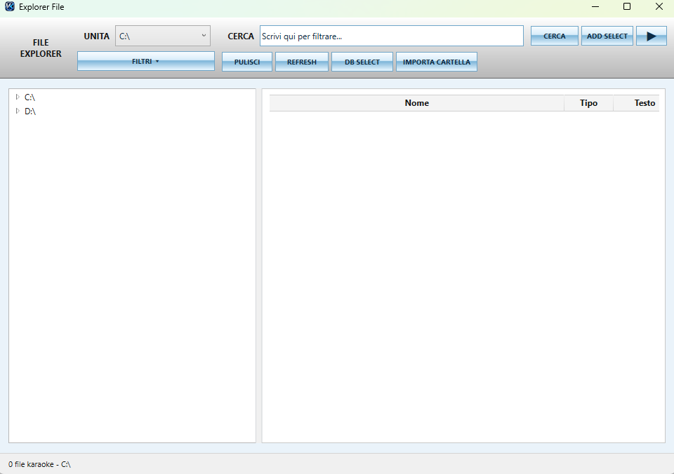
Explorer File
Ricerca, filtri, importazione e preascolto delle basi.
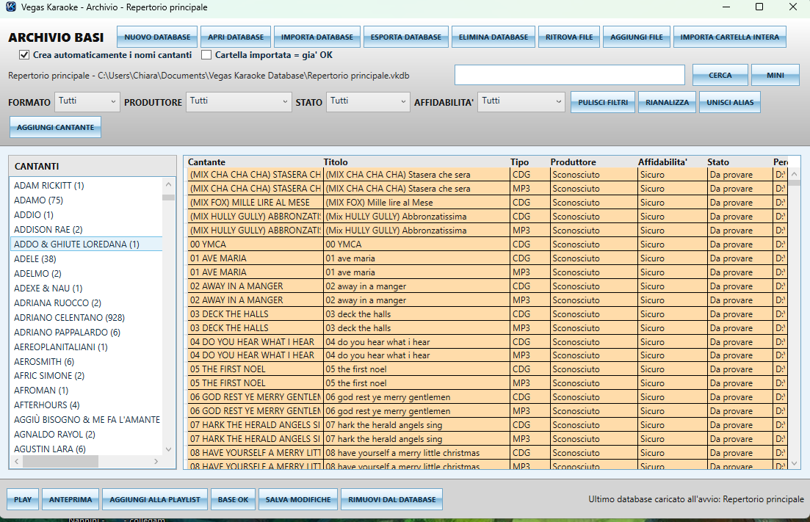
Database Archivio Basi 1.7.4
Nuova visuale archivio: repertorio principale, import/export database, ricerca, filtri, alias, produttore, stato e affidabilità.
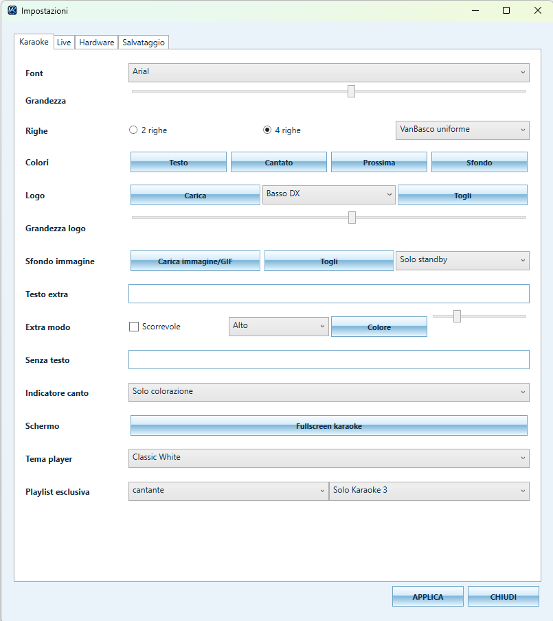
Personalizzazione Karaoke
Font, colori, logo, sfondo, GIF e modalità 2/4 righe.
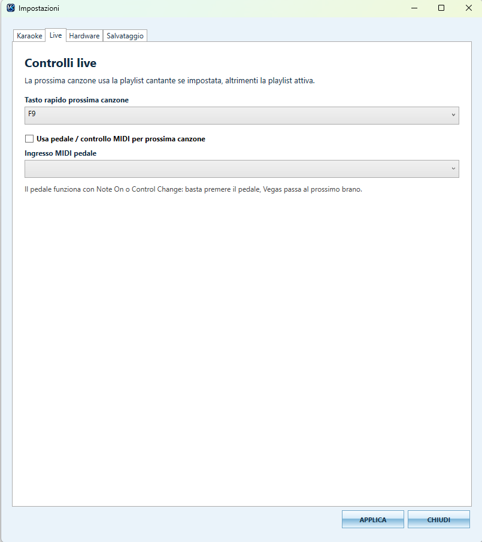
Controlli Live
Tasto rapido prossima canzone e supporto pedale MIDI.
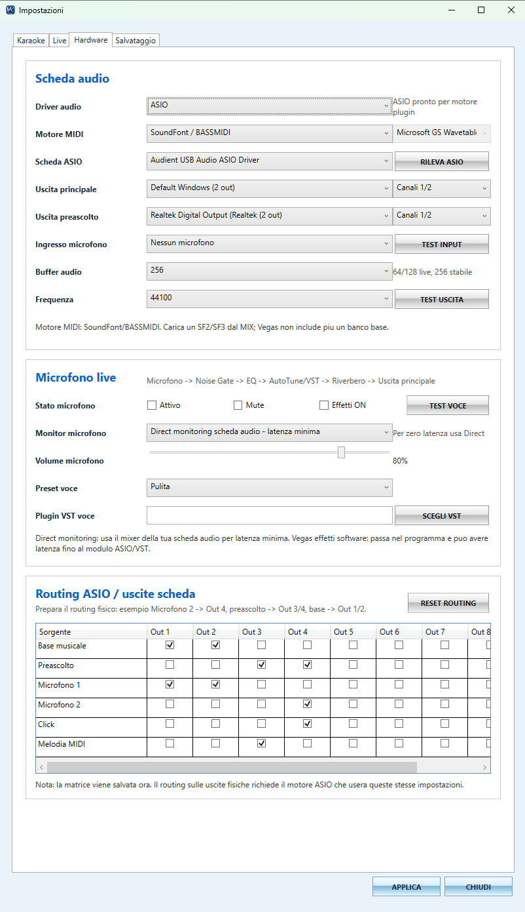
Hardware Audio e Routing
ASIO, preascolto, microfono, VST e routing uscite.
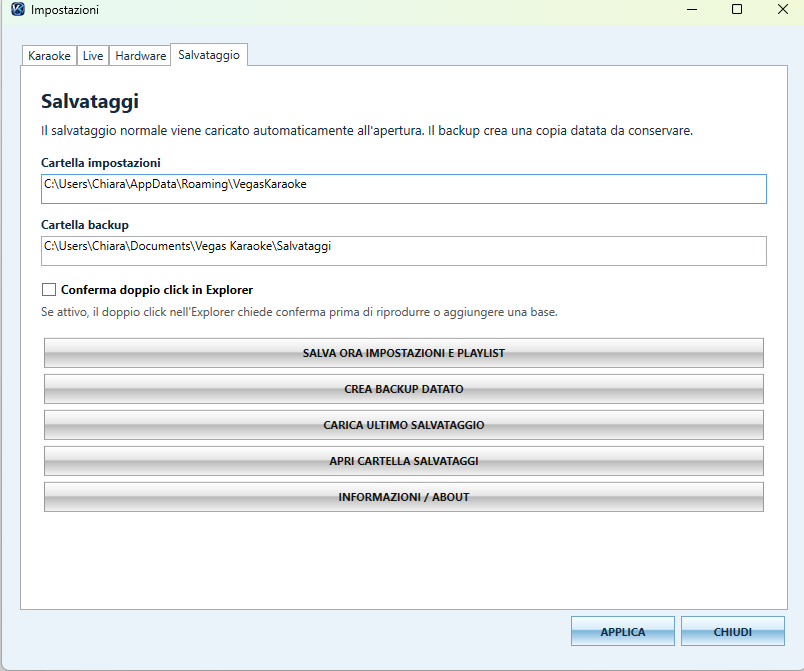
Salvataggi e Backup
Impostazioni, playlist, backup e ripristino.

Creazione Karaoke IA
Separazione voce/base, trascrizione, LRC, MP3 e MP4 karaoke.
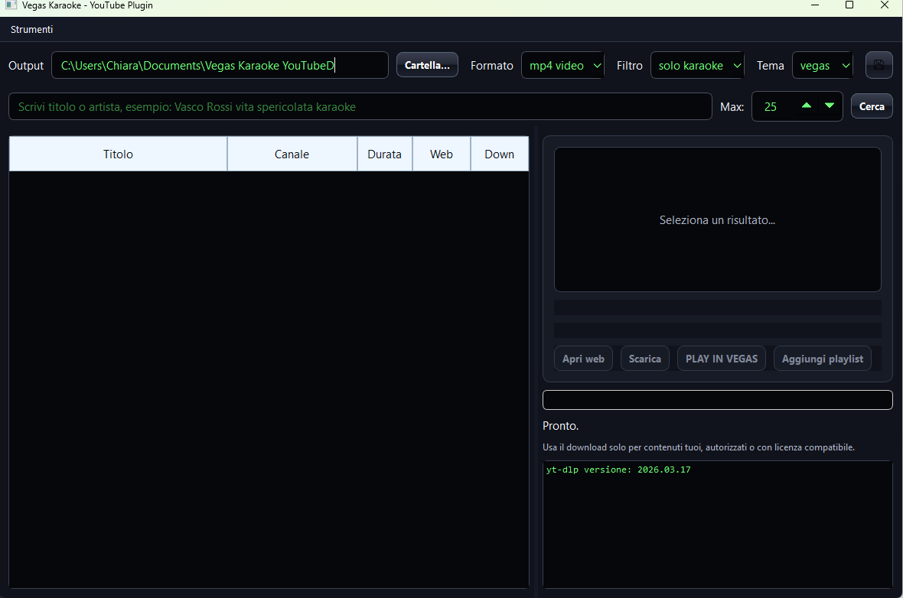
YouTube Plugin
Uso per contenuti propri, autorizzati o con licenza compatibile.

Jangle Live / Jingle Pad Wall
Nuova parete pad per jingle live, effetti audio, cartelle, set rapidi e invio al karaoke.
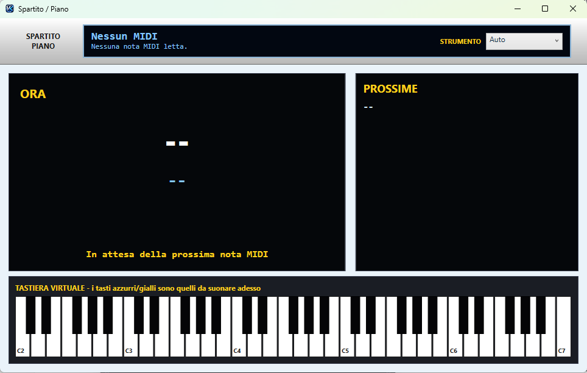
Spartito / Piano MIDI
Visualizzazione note MIDI e tastiera virtuale.
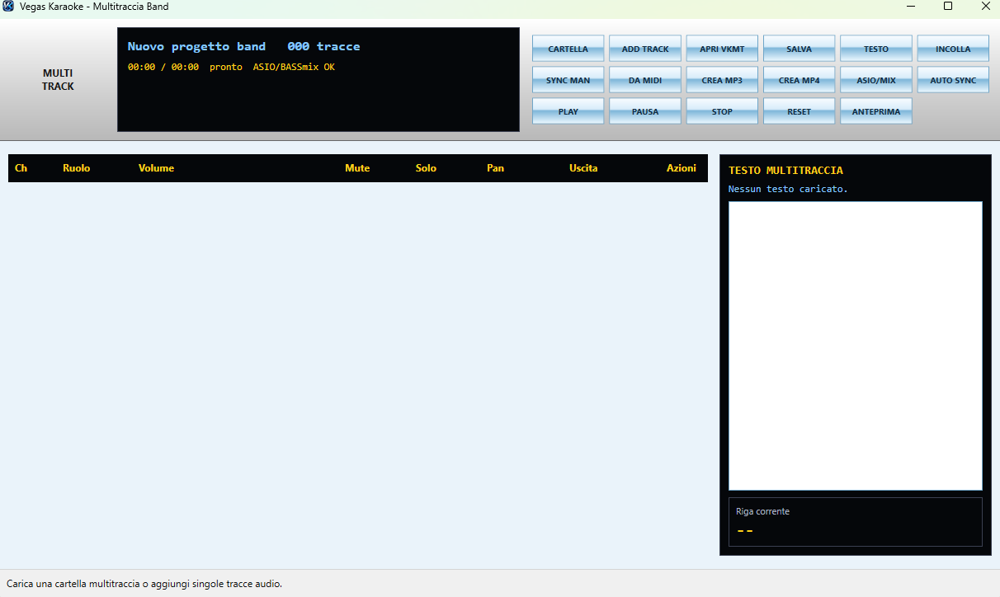
Multitraccia Band
Gestione tracce, mute, solo, pan, routing e testi.
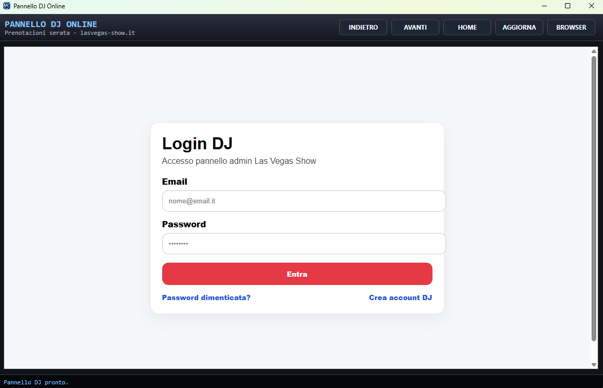
Pannello DJ Online
Accesso al pannello online per gestione serata.

Schermo Karaoke
Testo grande, logo personalizzato e fullscreen.
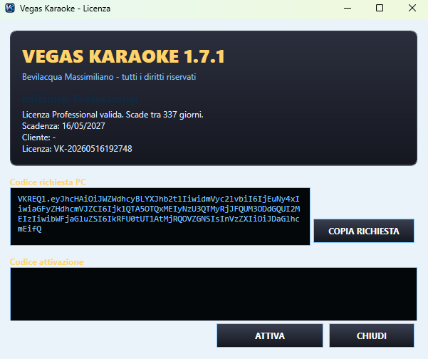
Sistema Licenza
Attivazione licenza Home/Professional con chiave.